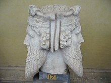

 <!DOCTYPE html> 
<html lang
="en">
 <head>
  <meta charset="utf-8">  
  <meta-name="viewport" content-"width=device-width,initial-scale=1">
  <link rel="stylesheet" type="text/css" href="style.css"> 
  </meta-name>
  <meta-name="Trish Higgs" content="philosophy"></meta-name>
  <title> Gang of Five</title> 
  <link href="https://fonts.googleapi.com/css?family=Roboto+Condaensed:300,300i,400,400i,700,700i" rel="stylesheet" >
 
 </head>    
</html>
<body>
<h1>The Gang of Five</h1> 
 <h3>(Philosophy.)</h3> 
 
 

<div class="boss"><p> Group Facilitator: Trish  <input type="image" src="Ownfiles/img/trish%201.jpg" alt="Trish" width="150" height="100"</p>      
</div> 
      
       
  
   <div class="us">  
  <p> Lillian  <input type="image"  src="Ownfiles/img/lillian.jpg"  alt="IMG_lillian" width="150" height="100">
      Pauline  <input type="image" src="Ownfiles/img/pauline.jpg" alt="pauline" width="150" height="100"><br> Ian: Technology <input type="image" src="Ownfiles/img/ian.jpg"  alt="ian" width="150" height="100"> Bully: Web Editur    <input type="image" src="Ownfiles/img/IMG_4136.jpg" alt="4136" width="150" height="100"></p> </div>         
  
    
 <section>

 
    <h2>About Us</h2> 
     <ul>
     <li>We are The Gang of Five</li>
     <li>We call ourselves the Sophilians</li>
     <li>We are a philosophical group</li>
     <li>We are trying to develop a philosophy for all</li>
     <li>We believe that life is a continuous learning process</li>
     <li>We refer to the image of Janus to signify our policy of looking forward by looking back.  
        "</li> <p>Statue representing Janus Bifrons in the Vatican Museum.  Accessed: (https://en.wikipedia.org/wiki/Janus, 2018/22/06) 
         </p> 
       <li>We believe<em> Looking forward by looking back </em> appears to reinforce the views of Marshall McLuhan's rear-view mirror concept as we are continually updating and reviewing the developmental process in philosophy.</li>
         <li>We are interested in receiving any philosophical articles or views in order to help widen our spectrum; full credit will given to sender when used. Our policy is one of<em>inclusion</em> not <em> exclusion,</em> therefore all opinions are welcome.     </li>
       </ul>
       <h3>Poem inspired by Ian</h3>
     <br>
      <strong>S<strong>ilver Surfers---Also rans<br>
      <strong>O</strong>therwise known as Sophilians<br>
      <strong>P</strong>atricia began with traditional guise<br>
      <strong>H</strong>arman soon changed the input to wise<br>
     <strong>I</strong>ndividuals each with their own thoughts to offer<br>
     <strong>L</strong>ovingly contributing fuel to the coffer; <br>
     <strong>I</strong>nternet facilitated what was desired<br>
     <strong>A</strong>ttaching the cohorts with spiritual fire;<br>
     <strong>N</strong>ow we are one, a group forging on!<br>
     <strong>S</strong>orting out connections World Wide anon!</p><br>
         <p>Author: Patricia Doreen Higgs, 15th August 2017</p></div>
      </section>
   

<section>
   <br><h3>Feedback from Philosophy at Tricia's</h3>
    <article>
       <p>My meetings with Trish and the various groups we have been involved with over the last 20 years have been a very important and beneficial time for me and very worthwhile.</p>  
<p>Widening our horizons,ideas and ideals have been  dependant on a  knowledgable teacher and leader, Trish. We were taught critical thinking skills and the history of philosophy.  I read somewhere that knowing René Descartes was born in March 31st was as important as knowing that WW2 began in 1939. We were taught how to analyse statements and how to interpret the answers we arrived at, to gain these skills  guidance from someone well read and informed is essential and necessary, to me that someone is Trish  with her wealth of unquenchable knowledge.  The meetings of 8 to 10  people that we have been accustomed to, have come to an end brought about by change, and philosophy has shown us that change can be essential at times to enable us to move forward and introduce fresh ideas and values. </p> 
<p>Now we have the 'Gang of Five', a group of five headed by Trish, we are moving to another level and to quote Trish, 'looking back to look forward', by the introduction of technology and science to the agenda. To keep philosophy alive and vibrant we have to move forward with our 'leader'. 29/06/18</p>
  <p>Trish I hope the above simple attempt explains to some extent  what all of our meetings have meant to me. Lillian</p>
    </article>
    <article> 
      <p><b> Philosophy at Tricia’s </b> </p>
<p>I joined philosophy at Tricia’s in September 2013, almost 5 years ago. I had had some vague, spasmodic interest in pursuing philosophy since my late teens and now, being retired, my interest in finding out more was revived. I also felt I wanted to do something to keep my brain active, try to develop a greater ability to question, to look at things from various aspects, to be more creative as I felt I had never been strong in these areas of thinking.</p>
<p>I had barely any knowledge of philosophers or philosophy and joined a group of about 10 people, most of whom had been attending for some years, in an informal arrangement around the dining table at Tricia’s.</p>
        <p>Tricia’s provision of a library was another asset, providing me with the opportunity to borrow books and experience what might be right or not for me without effort and at no extra cost.</p>
       
        <p> Topics varied: they might be philosopher, philosophy, concept or topic based, covering a whole spectrum of periods in philosophy. As in any sphere, I was more interested in some topics and others were not for me but the important thing was to experience them. At an early stage in my attending, Trish introduced Speculative Realism, Graham Harman and OOO, and she often returned to them as of particular interest to her. I didn’t find this easy but I liked the concepts involved and with her encouragement and enthusiasm I have developed an interest myself.</p>
 <p>
In our meetings, nothing was ever done at a superficial level we were always made to think. Use of language and meanings of words in philosophy was something Tricia repeatedly tried to instil into us and I realised how important this is to my understanding.</p>
<p>
    Tricia is extremely well read and knowledgeable in Philosophy and she has an enthusiasm to share this with others. She has certainly been instrumental in sparking off and later cementing my interest in philosophy. She led each session and encouraged appropriate discussion and contributions from other group members ensuring the focus remained philosophical. At times it felt she was a hard taskmaster as she didn’t take comments at face value. It may sometimes feel uncomfortable but I have come to realise she is right: it has helped me to think deeper and learn to be able to back up what I say.</p>
    <p>I have learnt a lot over almost 5 years of attending philosophy at Tricia’s. During that time there have inevitably been changes of group members particularly for health reasons so that numbers have reduced and the dynamics of the group has changed. I feel Tricia has always given 100 per cent to the group and albeit sadly, I think she is right in deciding it has now run its course. This also frees her up to pursue more specific, in depth philosophical work which I hope to remain a part of.</p>
 
 <p>Going along to philosophy at Tricia’s was, for me, a good decision. Whilst I get annoyed with myself for not remembering as I would like, I now have knowledge stored somewhere in my brain which I can retrieve and branch out from by revisiting the wealth of information gained whether through my copious notes, books or the internet. I have an interest in continuing to read within philosophy.  My thinking, I feel has become more open and active, I question more and consider things from different aspects.<br> My life is richer. <br>Thank you Tricia.<br>
 Pauline</p>
        
    </article>
    <article><p>I first joined philosophy at Tricia's in February 2014 and was most impressed by the amount of  effort and enthusiasm expended by her. The meetings have been both interesting and well researched and I have gained a large quantity of knowledge over the last four years.</p>
     <p>During this time I have observed that there has been a lot of active participation from members, covering numerous philosiphical areas and this has been encouraged by Trish.    </p>
     <p>In life there is a time for all things, and for Trish, that means moving from the dining table at home to a wider group of potentially interested people. In order to do this we have decided to create our own website. To this end I have been learning the various necessary languages, HTML, CSS and Javascript, there are others but I felt getting to grips with the basics of these was a start. 
         </p>
     <p>In conclusion I will say that Trish is a very good motivator and I am sure that she will have the support of us all within the group, to help ensure the success of this new venture.<br>Thanks for everything,<br>Bully. </p> </article>
</section>
    <footer>Note: To clear up up any anomaly Patricia has been known over the years as 'Pat', Tricia and currently 'Trish'.</footer> 


 